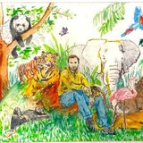

Welcome
Describe it. Build it. Ship it.
Vibecoding means building software by telling an AI what you want in natural language. No coding background needed.

Where the term comes from

…I'm building a project or webapp, but it's not really coding - I just see stuff, say stuff, run stuff, and copy paste stuff, and it mostly works.…
Tools
The vibecoding tools people are using right now, plus the free chatbots that can write code for you.
Browse the tools → 02DIY
Vibecode your first webpage and put it on the internet for free with GitHub, one step at a time.
Start building → 03Tips
How to debug when something breaks, and how to be more ambitious with what you build.
Get the tips → 04Design
Why design matters more in the age of AI, how to mock up an idea first, and where to find inspiration.
Start designing →What could you vibecode?
Not sure where to start? Here are some ideas to get started.
Automate something
Take a task you repeat in your work or personal life and let a small tool do it for you.
Build a mini game
Teach a concept or make it fun by turning it into a game.
Examples
Make your own website
A personal or professional site that introduces you.
Example
Create a software product
Any app you like, such as a to-do list or a health tracker.